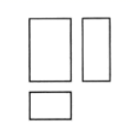

2020年北京市中考数学试题 · 选择题 第1、2、3、4、5题
1.如图是某几何体的三视图，该几何体是（ ）

A. 圆柱B. 圆锥C. 三棱锥D. 长方体
2.2020年6月23日，北斗三号最后一颗全球组网卫星从西昌发射中心发射升空，6月30日成功定点于距离地球36000公里的地球同步轨道．将36000用科学记数法表示应为（ ）
A.  B.
B.  C.
C.  D.
D. 
3.如图，AB和CD相交于点O，则下列结论正确 是（ ）
是（ ）

A. ∠1=∠2B. ∠2=∠3C. ∠1＞∠4+∠5D. ∠2＜∠5
4.下列图形中，既是中心对称图形也是轴对称图形的是（ ）
A.  B.
B. 
C.  D.
D. 
5.正五边形的外角和为（ ）
A. 180°B. 360°C. 540°D. 720°